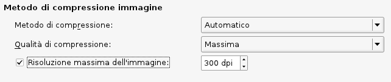

Forse, in altre parti della guida in linea, avete letto che è consigliabile ridimensionare le immagini al fuori di Scribus, allo scopo di ridurre le dimensioni del PDF esportato. Tuttavia vi è anche la possibilità di comprimere le immagini al momento dell'esportazione. Il vantaggio è che si tratta di un'operazione non distruttiva, cioè i file originali restano immutati, e sarà una loro versione compressa ad essere incorporata nel PDF.

Nella scheda Generale della finestra di dialogo dell'esportazione PDF, questa è la parte in cui si gestisce la compressione delle immagini. Per impostazione predefinita, l'opzione Risoluzione massima dell'immagine è disattivata, quindi non viene eseguita alcuna compressione. Nell'esempio mostrato sopra l'abbiamo attivata, e vediamo l'impostazione predefinita di 300 dpi. Questo è probabilmente il valore minimo da scegliere per un documento destinato alla stampa, ma se state generando un PDF da pubblicare sul web o comunque da visualizzare su un computer, potete scendere fino a 96 o 72 dpi, poiché queste sono le tipiche risoluzioni degli schermi da computer.
In Metodo di compressione, abbiamo queste opzioni:
In Qualità di compressione abbiamo queste opzioni:
Se esaminate queste impostazioni, probabilmente concluderete che esiste una qualche relazione tra il grado di compressione dell'immagine e il metodo utilizzato, e quindi che un elevato grado di compressione e un metodo con perdita dovrebbero produrre la peggiore qualità nell'immagine finale. Questo è senza dubbio vero, ma non vi è un buon modo di prevedere, con le impostazioni intermedie, l'entità della compressione né quanto accettabile sarà la qualità.
Ciò è spiegato più in dettaglio nel wiki di Scribus, nell'articolo Image DPI and Scaling, and Resultant File Sizes. Questo è un tentativo metodico, ma non esaustivo, di mostrare come diverse impostazioni influiscono sulla qualità dei risultati e sulle dimensioni del PDF generato. Dovreste leggere quest'articolo non solo per le sue conclusioni, ma soprattutto perché suggerisce come fare esperimenti con i vostri documenti, in modo che possiate prendere decisioni informate sulla compressione delle immagini nell'esportazione PDF.
Riassumendo, i risultati degli esperimenti mostrati sul wiki sono i seguenti: